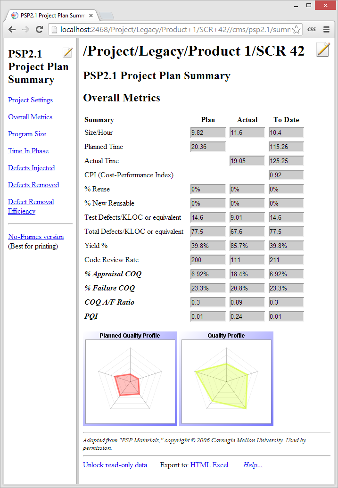

Step 7: Postmortem Step 7: Postmortem
Step 7: Postmortem Step 7: PostmortemThe PSP provides Postmortem scripts for all of the PSP levels. To get to the postmortem for the current program, we can click the link at the bottom of the development script. Alternatively, click the script button on the dashboard and choose the option for the postmortem script.
After making sure that the postmortem entry criteria are met, the next step is to enter the actual size data for the program. You may find the dashboard's LOC counter useful for measuring added, deleted, and modified lines of code. Enter the actual values for base, deleted, modified, total, base additions, new, reused, and total LOC on the Size Estimating Template form, which can be reached by clicking the appropriate link from the postmortem script.

Some people do not care to enter detailed actual size data on the Size Estimating Template. Those numbers shown above can safely be skipped as long as you faithfully enter summarized actual size data on the Project Plan Summary:

During postmortem, you should also review the numbers on the other pages of the Project Plan Summary form. If any numbers seem suspect, make appropriate corrections in the time and defect log editors.

Once the actual size information has been entered and other metrics have been reviewed for correctness, we can mark the postmortem phase complete. If you have faithfully marked all of the PSP phases complete, the dashboard will mark the project itself complete as well. We can double check that it has been marked by looking at the Project Completion checkbox on the Project Plan Summary.

If you marked all of the phases complete, but the Project Complete checkbox still is not checked, this would indicate that you had already overridden this automatic behavior. You can learn more about the relationship between marking the phases complete and marking the entire project complete by reading the Using the completion checkbox help topic.
The Process Dashboard also offers several other aids for analyzing
postmortem data. Choosing PSP Data Analysis from the
 menu will open the
web browser to a set of pages that contain many useful graphs of process
data.
menu will open the
web browser to a set of pages that contain many useful graphs of process
data.

This Data Analysis page provides several different categories of charts to allow easy analysis of various metrics measured in the PSP. Clicking on one of the chart thumbnails in the right pane will bring up a full-sized view of that chart. For more information on the types of data that can be analyzed via these reports and graphs, see the Creating Reports and Charts help topic.
That's it for this example. We hope it has been helpful.